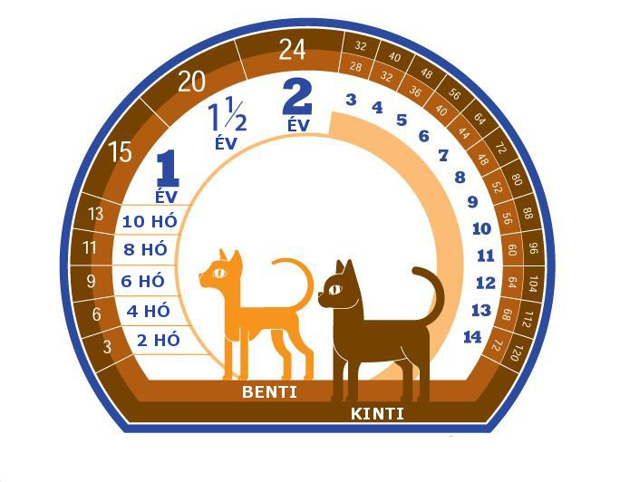
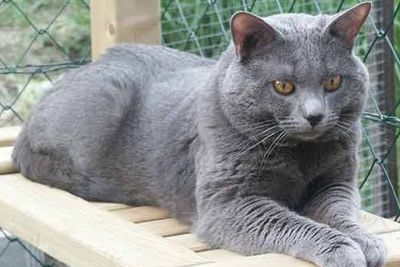
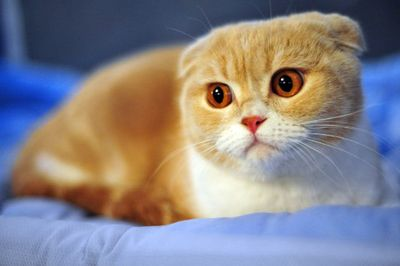

A macska
A macska egy kisebb termetű húsevõ emlõsállat. Ügyes ragadozó.
Az ókori Egyiptomból az ember és a macska közötti kapcsolatot igazoló elsõ leletek, a múmiák és írásos adatok, az Ó- és Középbirodalom közötti idõszakban (i. e. 2000 körül) keletkeztek, mikor a macska háziasítása már megtörtént. Kezdetben szent állatként tisztelték õket, elpusztításuk halálbüntetést vont maga után, késõbb azonban már amiatt is tenyésztették, mert magtáraiktól távol tartották az egereket és más rágcsálókat, sõt a sivatagból betévedõ kígyókat is.
A macskák sportos alkatúak, testük gyors, intenzív tevékenységre alkalmas, így ideális a ragadozó életmódhoz. Jó futók, rövidtávon képesek elérni az akár 50 kilométer/óra sebességet is. Ízületeik hajlékonyak, hosszú lábaikkal, rugalmas erõs izmaikkal remekül ugranak. Igen jó az egyensúlyérzékük, melynek megtartását hosszú hajlékony farkuk is segíti, reflexeik gyorsak.
Fogazatuk és emésztõ szervrendszerük a húsevéshez alkalmazkodott. A házi macskák kis mennyiségû növényi táplálékot is igényelnek. Az emberi ételek egy része nem kedvezõ a macskákra nézve, ilyen például a csokoládé, amely mérgezést okozhat.
Rendkívül igényesek a tisztaságra, nagyjából az életük 30 százalékát töltik tisztálkodással. A mosakodás elõsegíti a test melegének megõrzését, eltávolítja az élõsködõket és serkenti a bõr vérkeringését. Nyelvük papilláival és nyáluk használatával tartják tisztán bundájukat.
A szobamacskáknak alomként kõzúzalékot, faforgácsot, papírt, vagy homokot tartalmazó alomtálcára van szükségük, amely a számukra illemhelyként szolgál. Ez az alkalmatosság gyakori tisztítást igényel, mivel az állat másképp nem hajlandó használni.
A macskák természetes ösztönük révén idõrõl idõre keresnek egy megfelelõ felületet, amelybe karmaikat belemélyeszthetik, hogy lábaikat hátra húzva megszabadulhassanak az elkopott karom burkoktól. A karomélesítés segíti az izmok edzésben tartásában, egyben örömet is szerez az állatnak. A szobamacskáknak ehhez egy erre alkalmas karomélesítõ póznára van szükségük, másképp a bútorokat és szõnyegeket kénytelenek használni, amelyeket ezzel megrongálhatnak.
Érzelmeiket testbeszéddel is kifejezik, például a barátságos, kedveskedõ dorombolással kiegészített dörgölõdzés, hízelgés, vagy a farok csóválása. A utóbbi utalhat izgatottságra vagy idegességre, egyes jelzéseik azonban félreérthetõek, a harapás történhet játékból, de ingerültségbõl fakadóan is.
Az anyaállat a kölykeit három hetes koruktól a zsákmányállatok segítségével tanítja vadászni. Kezdetben élettelenül, majd késõbb élõ állapotban viszi eléjük, hogy az utódok láthassák, hogyan kell megölni, illetve megenni õket.
Egyedülálló tájékozódási képességük lehetõvé teszi, hogy akár több száz kilométeres távolságból is hazataláljanak.
A házi macskák, - különösen a fiatal egyedek, - rajonganak a zsineggel való játékért. Legtöbbjük képtelen ellenállni a meglóbált vagy földön húzott zsinórnak. Imádnak a lézermutató fénypontja után rohangálni.
Szívesen tartózkodnak magasan levõ helyeken. A magasság jó megfigyelõpont, ahonnan biztonságosan áttekintheti a "területét", szemmel tarthatja az emberek és az esetleges egyéb háziállatok tevékenységét, mozgását. Számára ez tekintélyt és biztonságérzetet is nyújt.
Vérmérsékletük nagyban függ fajtájuktól illetve tartási körülményeiktõl.
Más állatokhoz képest meglehetõsen sok idõt töltenek alvással, különösen idõsebb korukban. A napi alvásigényük körülbelül 12 - 16 óra, némelyikük akár 20 órát is képes átaludni. Idõnként félálomban pihennek, ehhez a lábait behajlítva lekuporodik, illetve lefekszik, szemeit behunyja, füleit elõre vagy a zajok irányába fordítja.
A macskák életkora

Kékkel az emberi időmérték látható
Közkedvelt és divatos macskafajták:
- Abesszín macskafajták
- Amerikai drótszõrû macska
- Bengáli macska
- Burma macska
- Hócipõs macska
- Karthauzi macska

- Perzsa macska
- Skót lógófülű macska

- Szfinx macska
- Sziámi macska
Piller Ferenc Tamás